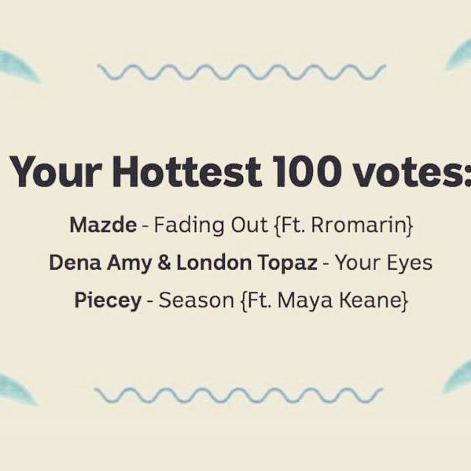

Everyone's a hero in their own way
We begin today’s hunt in search of a unicorn. Or perhaps, a leprechaun. Cast your minds back to the Irish general election of 2002. In Dublin North constituency there were 12 candidates and 44,000 votes cast. Voters could choose to preference how ever many candidates they liked, making 1.3 trillion different possible ballots. It seems unlikely that two people would cast the vote then. Luckily for us, the Irish electoral commission published the ballots; we can check. 16,000 people did cast unique ballots, but that means that more than half of people voted exactly the same as someone else. In fact, the most common pattern was chosen by 800 voters, for just the three candidates from one party in ticket order. So even though there are lots of possible combinations, some combinations are much more likely than others because voters aren’t choosing randomly (I hope).
What does this have to do with the Hottest 100? In our case, there are 1,887 ‘candidates’ in the form of eligible songs (not counting write-in songs). That means that there are \(5.6 \times 10^{32}\) different possible ballots in this year’s Hottest 100. To put this number in context, if you had that many grapes it would weigh the same as the Sun. It’s really big. But as we saw in Ireland, we could still get doppelgänger votes if people’s musical tastes were sufficiently aligned. A spanner in the works though is that we have less than 2,600 ballots. And so unfortunately, no two people in my sample voted exactly the same way.
To try to rescue this anti-climatic result, I loosened the parameters. Okay, so no one voted exactly the same, but are there people whose ballots differ by one song? By two songs? That seems possible. Pause for a second and make a prediction; I’ll wait.
…
No, still no hits. The number of possible ballots is just too huge, and my collection of ballots too small.
So let’s look at the reverse question: Whose ballot was most unlike any other? Who is a rare unicorn? Who, in other words, is the hippest hipster? To make a ranking system, we will give each song points equal to the number of people who voted for it. For example, HUMBLE is worth 394 points and Bobby by (Sandy) Alex G is worth 1 (Poor Alex G, only got one vote. I like his song Mary). Then each person’s score is the sum of their songs. The goal is to have the lowest score, the least number of song choices in common with other people.
And the winner, with a hipster score of just 11, is

Yeah, you probably haven’t heard of them. As this was all a bit disappointing, as a bonus if you post your votes below I’ll calculate your score too.